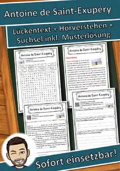
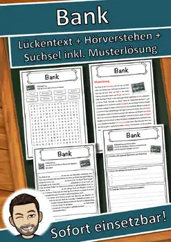
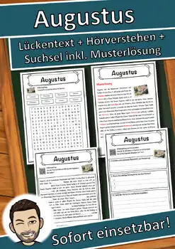
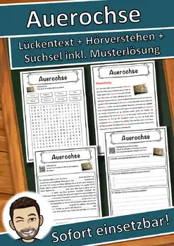
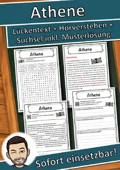
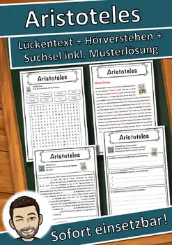

Antoine de Saint-Exupéry – Deutsch / German Arbeitsblatt
Antoine de Saint-Exupéry – deutschsprachiges Arbeitsblatt (German worksheet) mit Lückentext, Hörverstehen und Suchsel. 5 Seiten, Lösungen inklusive. Entirely in German / komplett auf Deutsch.
Aus dem Text: „war ein sehr bekannter französischer Schriftsteller, der ein berühmtes Buch namens "Der kleine Prinz" geschrieben hat, das 1943 veröffentlicht wurde.“
Inhalt:
- Seite 1: Informationstext zum Thema „Antoine de Saint-Exupéry“ als Lückentext mit Wortspeicher (8 Lücken)
- Seite 2: Musterlösung zum Lückentext
- Seite 3: Hörverstehen – der auf dem Blatt gedruckte QR-Code spielt die Aufnahme des Textes ab (kostenlos, ohne Anmeldung); die Kinder finden eine Überschrift, notieren drei Informationen und fassen den Hörtext in zwei Sätzen zusammen
- Seite 4: Suchsel mit den 8 Schlüsselwörtern
- Seite 5: Musterlösung zum Suchsel
Niveau: einfacher, klarer deutscher Text für Kinder (Klexikon-Reihe), geeignet für die Klassen 5–8, für Deutsch als Zweitsprache (DaZ) und für Deutsch als Fremdsprache (DaF, etwa A2–B1), Vertretungsstunden, Hausaufgaben oder schnelle Lerner. Keine Vorbereitung: ausdrucken und los. Schwarz-weiß, kopierfreundlich.
Nutzungsbedingungen: Lizenz für eine Lehrkraft bzw. ein Klassenzimmer; für Kolleginnen und Kollegen bitte weitere Lizenzen erwerben. Quellenangaben (Text und Bilder) stehen auf dem Blatt. Texte und Bilder wurden mit Unterstützung von KI (künstlicher Intelligenz) erstellt und von einer Lehrkraft sorgfältig geprüft.
Similar resources

Bank – Arbeitsblatt Lückentext, Hörverstehen & Suchsel | Deutsch / German
Bananen – Arbeitsblatt Lückentext, Hörverstehen & Suchsel | Deutsch / German

Augustus – Arbeitsblatt Lückentext, Hörverstehen & Suchsel | Deutsch / German

Auerochse – Arbeitsblatt Lückentext, Hörverstehen & Suchsel | Deutsch / German

Athene – Arbeitsblatt Lückentext, Hörverstehen & Suchsel | Deutsch / German
Astrid Lindgren – Arbeitsblatt Lückentext & Hörverstehen (Deutsch / German)
Arthur Conan Doyle – Arbeitsblatt Lückentext & Hörverstehen (Deutsch / German)
